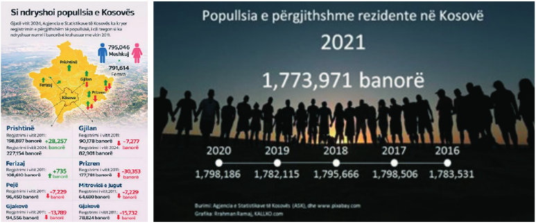

Ndryshimet në popullsinë e Kosovës
Popullsia e Kosovës ka ndryshuar përgjatë historisë. Aktualisht, ajo varet nga zhvillimi ekonomik, nataliteti dhe migrimi i popullsisë.
Për arsye të luftërave dhe kushtet e vështira për të jetuar, shumë kosovarë kanë migruar. Ata largohen nga vendi për të siguruar kushte më të përshtatshme jetese. Si rezultat i lindshmërisë së lartë dhe vdekshmërisë së ulët, Kosova ka popullsinë me moshën më të re në Evropë, mosha mesatare e së cilës është rreth 34 vjeçe. Popullsia kosovare ka një jetëgjatësi të lartë, mesatarisht rreth 80 vjet.
